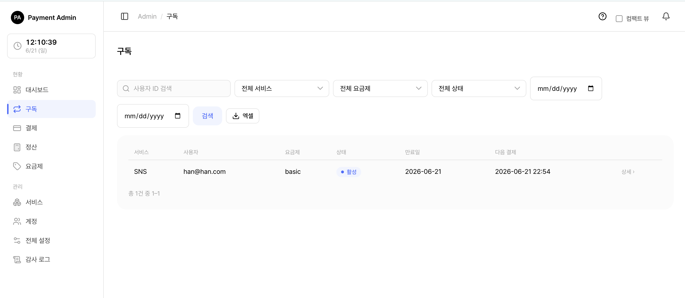
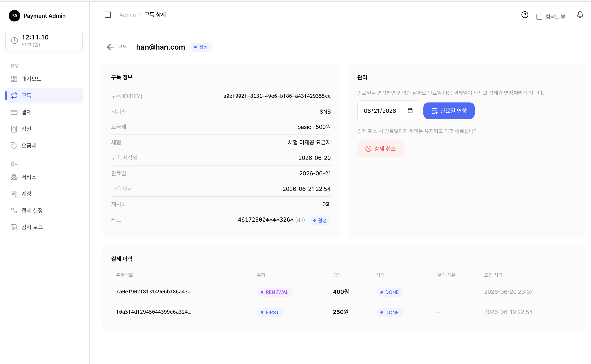

3. 구독 관리
이 문서는 관리자 콘솔의 구독 메뉴에서 구독을 찾아보고, 상태를 이해하고, 필요할 때 직접 손을 대는 방법(강제취소·만료일 연장·수동 재결제)을 안내합니다.
🍎
3.1 구독 목록 보기

- 왼쪽 메뉴에서 구독을 누릅니다.
- 위쪽 검색·필터로 원하는 구독을 좁힙니다. 사용자 ID 검색, 서비스·요금제·상태 드롭다운, 등록일 범위로 필터링할 수 있습니다.
- 표의 줄을 클릭하면 그 구독의 상세 화면으로 이동합니다.
목록 표에는 서비스, 사용자, 요금제, 상태(배지), 만료일, 다음 결제일이 보입니다. 머리글을 눌러 정렬할 수 있고, 현재 필터를 그대로 담아 엑셀로 내려받을 수도 있습니다.
💡참고: 서비스 담당자(SERVICE_MANAGER)는 자신이 담당하는 서비스의 구독만 보입니다. 전체 관리자(SYSTEM_ADMIN)는 모든 구독을 봅니다. → 역할별 차이
3.2 구독 상태의 의미
구독은 생애주기에 따라 여러 상태를 거칩니다. 각 상태가 무슨 뜻인지, 그리고 그 상태에서 서비스를 이용할 수 있는지를 정리했습니다.
| 상태 | 한글 의미 | 서비스 이용 | 설명 |
|---|---|---|---|
| TRIAL | 체험 중 | 가능 | 무료 체험 기간입니다. 체험이 끝나면 첫 정기 결제가 진행됩니다. |
| ACTIVE | 이용 중 | 가능 | 정상적으로 결제되고 이용 중인 상태입니다. |
| PAST_DUE | 미수(결제 실패) | 가능 | 자동결제가 실패했지만 유예 기간이라 아직 이용은 됩니다. 재시도가 진행됩니다. |
| SUSPENDED | 정지 | 불가 | 결제 재시도가 모두 실패해 정지된 상태입니다. 수동 재결제로 되살릴 수 있습니다. |
| CANCELED | 해지 예약 | 가능 | 해지를 예약한 상태입니다. 만료일까지는 그대로 이용되고, 그 이후 종료됩니다. |
| EXTENDED | 연장처리 | 가능 | 운영자가 만료일을 수동으로 연장한 상태입니다. 이용이 허용되고, 새 만료일에 자동결제가 갱신됩니다. |
| EXPIRED | 완전 종료 | 불가 | 구독이 완전히 끝난 최종 상태입니다. 더 이상 되돌릴 수 없습니다. |
🍎쉽게 말하면, SUSPENDED(정지)와 EXPIRED(완전 종료)일 때만 서비스 이용이 막힙니다. 나머지 상태(체험·이용 중·미수·해지 예약·연장처리)에서는 만료일 전까지 이용이 유지됩니다.
참고: CANCELED(해지 예약)는 "지금 당장 끊김"이 아닙니다. 이미 결제한 기간(만료일)까지는 계속 쓸 수 있고, 만료일이 지나면 자동으로 EXPIRED가 됩니다.
3.3 구독 상세 화면 둘러보기

목록에서 구독 한 줄을 클릭하면 상세 화면이 열립니다. 화면은 크게 세 부분입니다.
- 구독 정보 (왼쪽): 구독 ID, 서비스, 요금제·금액, 체험 사용 여부, 구독 시작일, 만료일, 다음 결제일, 재시도 횟수, 그리고 등록된 카드(마스킹 번호 + 발급사 + 활성/비활성 배지)가 보입니다. 카드를 클릭하면 카드 상세로 이동합니다. → 카드 관리
- 관리 (오른쪽): 상황에 맞는 운영 버튼(수동 재결제·만료일 연장·강제 취소)이 모입니다. 어떤 버튼이 보이는지는 현재 구독 상태에 따라 달라집니다.
- 결제 이력 (아래): 이 구독에서 일어난 결제들이 표로 정리됩니다. 만료일 연장을 한 적이 있으면 그 위에 만료일 연장 이력도 함께 표시됩니다.
3.4 운영 작업
강제 취소
운영자가 구독을 직접 해지 예약하는 동작입니다.
- 구독 상세의 관리 영역에서 강제 취소 버튼을 찾습니다. (이용 중·미수·연장처리 상태일 때 나타납니다.)
- 버튼을 누르면 "구독을 강제 취소할까요?" 확인창이 뜹니다.
- 확인하면 구독이 해지 예약(CANCELED) 상태가 됩니다.
⚠️주의: 강제 취소는 즉시 끊는 것이 아닙니다. 만료일까지는 혜택(이용)이 그대로 유지되고, 만료일이 지나면 자동으로 종료됩니다. 또 강제 취소를 하면 다음 자동결제 예약이 해제되어 더 이상 청구되지 않습니다.
참고: 강제 취소 버튼은 이용 중(ACTIVE)·미수(PAST_DUE)·연장처리(EXTENDED) 상태에서만 보입니다. 이미 정지·해지 예약·완전 종료된 구독에는 나타나지 않습니다.
만료일 연장
만료일과 다음 결제일을 운영자가 원하는 날짜로 미루는 동작입니다.
- 구독 상세의 관리 영역에서 만료일 연장 부분을 찾습니다. (완전 종료(EXPIRED)가 아닌 구독에서 보입니다.)
- 날짜 입력칸에 새 만료일을 고릅니다(기본값은 현재 만료일).
- 만료일 연장 버튼을 누르고 확인창에서 확인합니다.
- 입력한 날짜로 만료일과 다음 결제일이 바뀌고, 구독 상태가 연장처리(EXTENDED)가 됩니다.
💡팁: 연장처리(EXTENDED) 상태에서는 이용이 계속 허용되고, 새로 정한 만료일에 자동결제로 갱신이 이어집니다. 연장한 이력은 상세 화면의 "만료일 연장 이력"에 처리 시각·변경 전/후 만료일·처리자와 함께 남습니다.
수동 재결제 (지금 결제 처리)
자동결제가 실패해 미수(PAST_DUE) 이거나 정지(SUSPENDED) 된 구독을, 등록된 카드로 지금 바로 다시 청구하는 동작입니다.
- 구독 상세를 엽니다. 미수·정지 상태이면 관리 영역 위쪽에 안내 문구와 결제 처리 버튼이 보입니다. 청구될 금액도 함께 표시됩니다.
- 결제 처리 버튼을 누르고 확인창에서 확인합니다.
- 결제에 성공하면 구독이 이용 중(ACTIVE)으로 되살아나고, 만료일·다음 결제일이 결제 시점 기준으로 다시 계산됩니다.
⚠️중요: 등록된 카드가 없거나 카드가 비활성 상태이면 결제 처리 버튼이 눌리지 않습니다. 이때는 먼저 카드 관리에서 카드를 활성화하거나 등록해야 합니다.
참고: 수동 재결제는 미수(PAST_DUE)·정지(SUSPENDED) 상태에서만 가능합니다. 이용 중·체험·해지 예약·완전 종료 구독에는 결제 처리 버튼이 나타나지 않습니다.
3.5 어떤 버튼이 언제 보이나 (상태별 요약)
| 구독 상태 | 결제 처리(재결제) | 만료일 연장 | 강제 취소 |
|---|---|---|---|
| TRIAL (체험 중) | — | 가능 | — |
| ACTIVE (이용 중) | — | 가능 | 가능 |
| PAST_DUE (미수) | 가능 | 가능 | 가능 |
| SUSPENDED (정지) | 가능 | 가능 | — |
| CANCELED (해지 예약) | — | 가능 | — |
| EXTENDED (연장처리) | — | 가능 | 가능 |
| EXPIRED (완전 종료) | — | — | — |
💡팁: 화면에 버튼이 보이지 않는다면, 그 동작이 현재 구독 상태에서 허용되지 않는다는 뜻입니다. 위 표에서 현재 상태를 확인하세요.
🔗